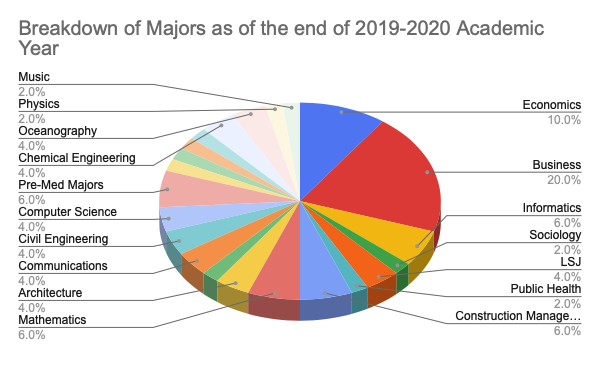

Due to the current COVID-19 pandemic, we have decided to focus on the health and safety of our community and move recruiting to a virtual environment. In order to get in contact with the fraternity and learn more about the rush process or seek more information about the fraternity in general, please feel free to reach out to one of our many Recruitment Chairmen listed here!
We hope that you will find your home-away-from-home here at Theta Delta Chi, and we look forward to meeting you!
The brothers of the Xi Deuteron Charge of the Theta Delta Chi Fraternity would like to formally congratulate you on becoming a Husky and welcome you to the University of Washington. Theta Delta Chi is one of the oldest fraternities at the University of Washington, and we pride ourselves on being one of the most distinguished student organizations on campus for over a hundred years.
Our house can accommodate around sixty members, and we are proud to announce that we are one of the few houses in the Greek System that does not have a freshmen sleeping porch (a room in which twenty to thirty individuals sleep). Instead, new members live in quads, and older members are guaranteed a double or a single. Our personal chef Jarrett serves us delicious, hot meals for lunch and dinner on Mondays through Fridays, except for days coinciding with university scheduled holidays. Additionally, we have toast, bagels, cereal, and fresh fruit put out for breakfast. Our chef caters to all dietary restrictions and will happily make special meals for those that need them.
The first quarter living in the house will cost $3300; this is a result of our National's new member initiation fees. The following quarters will cost $3100. These figures are an all-inclusive expense that covers housing, food, social activities, etc. This is significantly cheaper than living in the dorms; a double in McCarty Hall (North Campus) or Lander Hall (West Campus) would cost $3511 per quarter with a required meal plan starting at $991 per quarter. We are also very fortunate to have a parking lot that provides space for twenty cars to our members.
Theta Delta Chi at the University of Washington holds its members to a high standard regarding academic achievement. We at the Theta Delta Chi believe that the most important duty of our members is achieving academic success. Because of this, our fraternity requires all members to maintain a quarterly GPA of 3.00 or above. If a member fails to make this minimum GPA, the Academics Chairman will assist them in creating a plan of action to help him raise his grades. The member will also be required to attend the daily study tables (a quiet room normally located on campus) proctored by the Academics Chairman and the weekly CLUE sessions (if applicable) instructed by the University. New Members are required to attain the minimum GPA to be initiated. Theta Delta Chi will defer a New Member's initiation until he has met the quarterly GPA requirement.

[1]Data double counts members who are double majoring
[2]"Pre-Med Majors" consists of Molecular, Cellular, & Developmental Biology Major; Biology Major
| Fall Quarter 2019 | Winter Quarter 2020 | Spring Quarter 2020 |
| 3.38 | 3.39 | N/A |
We are currently recruiting guys to fill up our New Member Class of 2020. We are looking for fun, well-rounded, and accomplished individuals to share our brotherhood and college experience with! Please feel free to reach out and text one of the members of our recruitment team or sign up with ChapterBuilder so our recruitment team can reach out to you!
Fraternities and sororities at the University of Washington have been viewed as one of the premier collegiate experiences since 1896; they have played an instrumental role in the lives of thousands of students and alumni. The mentoring and academic excellence programs, social activities, philanthropy projects, and leadership development opportunities within Greek Life contribute much to the University, the surrounding Seattle community, and the world. Membership in a Greek letter organization is a lifetime privilege. Choosing to go Greek means working with a group of men and women who stand for common goals and ideas. The Greek experience during the college years is a great gateway to many rewards and connections later in life.
Membership within Theta Delta Chi is an eternal bond of Brotherhood and Friendship that lasts past college and life. In our fraternity, we are dedicated to bringing the best out of each and every one of our members, and we shall never haze. Theta Delta Chi's mission is to improve the Intellectual, Moral, and Social Being of every member through Friendship. Becoming a member of our fraternity will introduce you to a group of diverse men who are dedicated to assisting you every step of the way at the University of Washington.
Brandon Cain
Major: Music & LSJ
Graduating Class: 2022
Hometown: Frederickson, Washington
Phone Number: (253)365-5088
Jules Le-Jamtel
Major: Communications
Graduating Class: 2022
Hometown: Mamaroneck, New York
Phone Number: (914)216-8998
Dillon Mathews
Major: Physics
Graduating Class: 2022
Hometown: Lynnwood, Washington
Phone Number: (425)931-2511
Dominic Borras
Major: Oceanography
Graduating Class: 2021
Hometown: Bremerton, Washington
Phone Number: (360)981-0692
Tanner Hough
Major: Biology
Graduating Class: 2023
Hometown: Hockinson, Washington
Phone Number: ()
In 2016, the brothers of Theta Delta Chi launched the Bros UniteD program at the University of Washington. Bros UniteD is an eight-week community-based mentorship program for teenage boys (age 13-18) on the autism spectrum. It is a program that is run during the fall quarter at no cost to the family, and our goal is to provide each of our "little brothers" with a safe and fun environment where they can practice their social and communication skills. Each weekend during the fall quarter, the "big brothers" of the fraternity will spend time doing fun activities with their "little brothers." This past year's activities included a trip to the Woodland Park Zoo, a Nerf Gun day, bowling at the Husky Union Building, and much more!
If you are interested in finding out more information or know someone who may be interested, please feel free to contact us at brosuniteduw@gmail.com!
Please check out our Bros UniteD 2019 video!
Aces for Autism is our fraternity's philanthropy week that takes place during the spring quarter. Panhellenic sororities throughout the UW Greek System participate in the week-long competition, which includes a baking contest, a volleyball tournament, a date auction, a pastry feed, and much more! The proceeds from the week and other contributions is then donated to our program: Bros UniteD. This allows us to provide the Bros UniteD program to the families that need it for free!